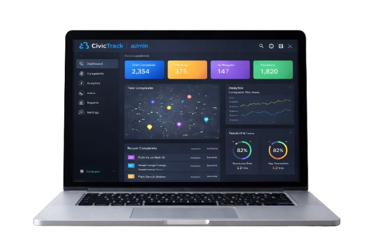

A smart digital platform that connects citizens with government authorities to report civic issues quickly and transparently. CivicTrack allows people to submit complaints like road damage, water leakage, garbage problems, and public safety issues with location and images.

Smart Technology for Smarter Cities
Report civic issues like potholes, garbage, or water leakage with photos and location tagging.
Track complaint progress with status updates like Pending, In Progress, and Resolved.
AI analyzes uploaded images and categorizes civic issues automatically.
GPS-based reporting ensures complaints reach the correct authorities.
Authorities manage complaints and assign tasks efficiently.
Automated workflows help resolve issues quickly.